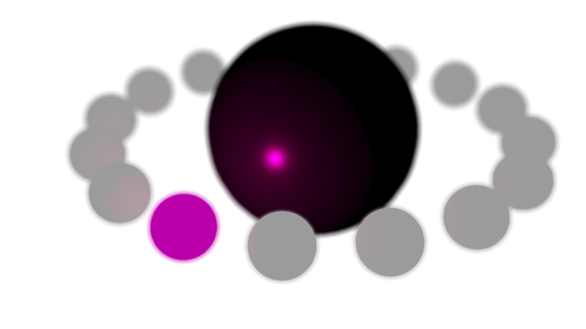
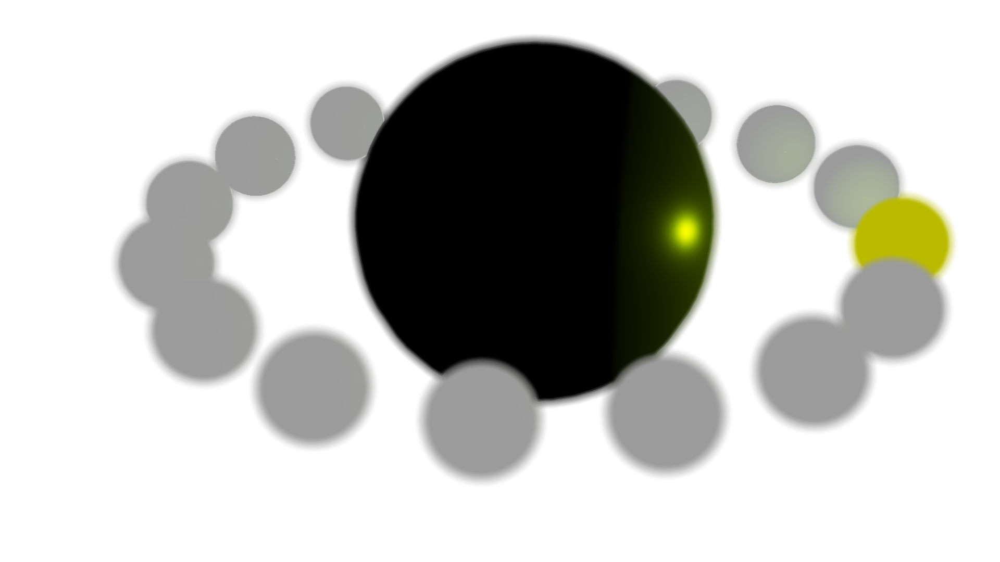

DepthOfFieldEffect Class
(Kuesa::DepthOfFieldEffect)Post-processing effect implementation of a depth of field. More...
| Header: | #include <Kuesa/DepthOfFieldEffect> |
| Since: | Kuesa 1.1 |
| Inherits: | Kuesa::AbstractPostProcessingEffect |
This class was introduced in Kuesa 1.1.
Properties
- focusDistance : float
- focusRange : float
- radius : float
Public Functions
| float | focusDistance() const |
| float | focusRange() const |
| float | radius() const |
Public Slots
| void | setFocusDistance(float focusDistance) |
| void | setFocusRange(float focusRange) |
| void | setRadius(float radius) |
Signals
| void | focusDistanceChanged(float focusDistance) |
| void | focusRangeChanged(float focusRange) |
| void | radiusChanged(float radius) |
Detailed Description
DepthOfFieldEffect implements an effect which simulates a more realistic camera behaviour, where only part of the scene is in-focus, and very far & very close objects are out-of-focus and thus blurred.
Example

Depth-of-field effect applied on a Kuesa scene.
Property Documentation
focusDistance : float
adjusts the focal distance.
This adjusts the focal distance, that is, the objects at this distance from the camera will be focused; those too close or too far away will be blurred.
| Distance 5.0 | Distance 8.0 |
|---|---|
|  |
Access functions:
| float | focusDistance() const |
| void | setFocusDistance(float focusDistance) |
Notifier signal:
| void | focusDistanceChanged(float focusDistance) |
See also DepthOfFieldEffect::focusRange.
focusRange : float
adjusts the breadth of the area which will be in focus.
This adjusts the size of the part of the scene which will be in focus. At 0.0, everything will be blurred. The bigger the value, the more of the scene will be in focus, centered on the focusDistance.
| Range 2.0 | Range 8.0 |
|---|---|
 |  |
Access functions:
| float | focusRange() const |
| void | setFocusRange(float focusRange) |
Notifier signal:
| void | focusRangeChanged(float focusRange) |
See also DepthOfFieldEffect::focusDistance.
radius : float
adjusts the radius of the depth of field effect.
The bigger the radius is, the more the out-of-focus objects will appear to be blurred.
| Radius 4.0 | Radius 42.0 |
|---|---|
Access functions:
| float | radius() const |
| void | setRadius(float radius) |
Notifier signal:
| void | radiusChanged(float radius) |
Member Function Documentation
[slot] void DepthOfFieldEffect::setFocusDistance(float focusDistance)
Sets the focus distance to focusDistance.
Note: Setter function for property focusDistance.
See also DepthOfFieldEffect::focusDistance.
[slot] void DepthOfFieldEffect::setFocusRange(float focusRange)
Sets the focal range to focusRange.
Note: Setter function for property focusRange.
See also DepthOfFieldEffect::focusRange.
[slot] void DepthOfFieldEffect::setRadius(float radius)
Sets the blur radius to radius.
Note: Setter function for property radius.
See also DepthOfFieldEffect::radius.